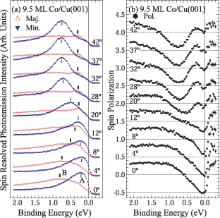

スピン偏極した表面電子状態
磁気ランダムアクセスメモリ (MRAM) は電子のスピンを制御した記録媒体で、高速かつ大容量で、消費電力が低い次世代型の不揮発性メモリとして注目されている。MRAM には磁気トンネル接合素子 (MTJ) が用いられており、スピン編極した電子のトンネル確率が、強磁性層の相対的な磁化の向きに依存することで磁気抵抗比が生じる仕組みになっている。また、磁気抵抗比は絶縁層と強磁性層の界面の状態にも影響すると考えられている [1]。巨大磁気抵抗効果を示す金属系多層膜の典型例に、fcc 構造を持つ Cu の上に hcp 構造をもつ Co を成長させた多層膜 (Co / Cu) がある。磁気抵抗は物質の電気抵抗が外部磁場によって変化する現象で、磁場の向きとスピンの向きが平行であるのるか、反平行であるのかで抵抗率が異なってくる。このような磁性多層膜の特性を明らかにするためには、スピンに依存した電子状態を直接観測することが重要となる。

スピン分解角度分解光電子分光スペクトル
スピン分解角度分解光電子分光スペクトル
光物性研究室では、Cu (001) 単結晶表面上に Co 原子をエピタキシャル成長させた fcc Co (001) 磁性超薄膜を作成し、多数スピンと少数スピンの電子構造を決定した。実験は広島大学放射光科学研究センターに設置されたスピン角度分解光電子分光装置を用いて行った。その結果、fcc Co (001）のスピンに依存したバルクバンドに加え、表面ブリルアンゾーンにおける Γ 点近傍に負にスピン偏極した共鳴型の表面電子状態を観測した。この表面状態は局所密度近似に基づくバンド構造計算でも再現され、Co 3dz2 の対称性を持っていることが明らかとなった。
K. Miyamoto et al., J. Phys. Condens. Matter 20, 225001 (2008)
宮本 幸治, 表面科学 Vol. 29, No. 1 pp.36-41 (2008)
参考文献
[1] H. F. Ding et al., Phys. Rev. Lett. 90, 116603 (2003).